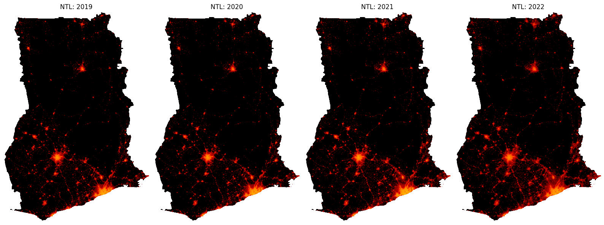
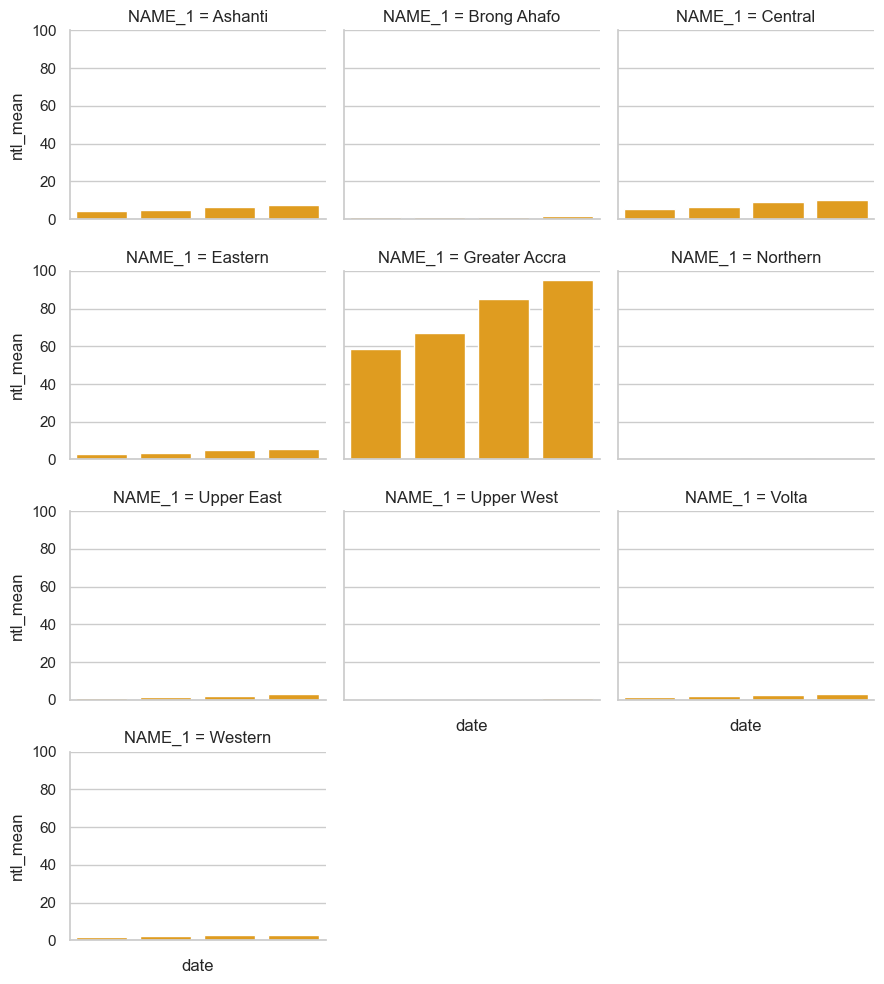

Examples using blackmarblepy#
NASA EarthData Bearer Token#
This package requires using a bearer token; to obtain a token, follow the below steps:
Go to the NASA LAADS Archive
Click “Login” (bottom on top right); create an account if needed.
Click “See wget Download Command” (bottom near top, in the middle)
After clicking, you will see text that can be used to download data. The “Bearer” token will be a long string in red.
Installing BlackMarblePy#
BlackMarblePy is available on PyPI; you can install it using pip or directly from the repository:
#!pip install git+https://worldbank/blackmarblepy.git
Usage#
Load requirements#
import datetime
import glob
import os
import time
import colorcet as cc
import geopandas as gpd
import matplotlib.pyplot as plt
import numpy as np
import pandas as pd
import rasterio
import seaborn as sns
from gadm import GADMDownloader
from blackmarble.bm_extract import bm_extract
from blackmarble.bm_raster import bm_raster
Define NASA bearer token#
For instructions on obtaining a NASA bearer token, please see above.
bearer = os.getenv("BLACKMARBLE_TOKEN")
Define Region of Interest#
Define region of interest for where we want to download nighttime lights data.
gdf = GADMDownloader(version="4.0").get_shape_data_by_country_name(
country_name="Ghana", ad_level=1
)
Make raster of nighttime lights #
The below example shows making daily, monthly, and annual rasters of nighttime lights for Ghana.
### Daily data: raster for February 5, 2021
r_20210205 = bm_raster(
roi_sf=gdf, product_id="VNP46A2", date="2021-02-05", bearer=bearer
)
### Monthly data: raster for October 2021
r_202110 = bm_raster(roi_sf=gdf, product_id="VNP46A3", date="2021-10-01", bearer=bearer)
### Annual data: raster for 2021
r_2021 = bm_raster(roi_sf=gdf, product_id="VNP46A4", date="2021-10-01", bearer=bearer)
Make raster stack of nighttime lights across multiple time periods #
To extract data for multiple time periods, add multiple time periods to date. The function will return a raster stack, where each raster band corresponds to a different date. The below code provides examples getting data across multiple days, months, and years.
#### Raster stack of daily data
date_range = (
pd.date_range(
datetime.datetime.strptime("2021-03-01", "%Y-%m-%d"),
datetime.datetime.strptime("2021-03-03", "%Y-%m-%d"),
freq="D",
)
.strftime("%Y-%m-%d")
.tolist()
)
r_daily = bm_raster(
roi_sf=gdf,
product_id="VNP46A2",
date=date_range,
bearer=bearer,
)
#### Raster stack of monthly data
date_range = (
pd.date_range(
datetime.datetime.strptime("2021-01-01", "%Y-%m-%d"),
datetime.datetime.strptime("2021-03-31", "%Y-%m-%d"),
freq="MS",
)
.strftime("%Y-%m-%d")
.tolist()
)
r_monthly = bm_raster(roi_sf=gdf, product_id="VNP46A3", date=date_range, bearer=bearer)
#### Raster stack of annual data
date_range = (
pd.date_range(
datetime.datetime.strptime("2019-01-01", "%Y-%m-%d"),
datetime.datetime.strptime("2023-01-01", "%Y-%m-%d"),
freq="Y",
)
.strftime("%Y-%m-%d")
.tolist()
)
r_annual = bm_raster(
roi_sf=gdf,
product_id="VNP46A4",
date=date_range,
bearer=bearer,
)
Mapping nighttime lights#
In this section, we illustrate an example of making maps of nighttime lights.
Show code cell source
# Set up the figure and subplots
fig, axs = plt.subplots(1, 4, figsize=(16, 8))
# Generate the images and configure each subplot
for i, year in enumerate(date_range):
r_np = r_annual.read(i + 1)
r_np = np.log(r_np + 1)
ax = axs[i]
# Display the image
ax.imshow(r_np, cmap=cc.cm.fire)
ax.axis("off")
ax.set_title("NTL: {}".format(year[0:4]))
# Adjust the spacing between subplots
plt.tight_layout()
# Show the figure
plt.show()

Compute trends on nighttime lights over time#
We can use the bm_extract function to observe changes in nighttime lights over time. The bm_extract function leverages the rasterstats package to aggregate nighttime lights data to polygons. Below we show trends in annual nighttime lights data across Ghana’s first administrative divisions.
df = bm_extract(
roi_sf=gdf,
product_id="VNP46A4",
date=date_range,
bearer=bearer,
)
sns.set(style="whitegrid")
g = sns.catplot(
data=df,
kind="bar",
x="date",
y="ntl_mean",
col="NAME_1",
height=2.5,
col_wrap=3,
aspect=1.2,
color="orange",
)
# Set the x-axis rotation for better visibility
g.set_xticklabels(rotation=45)
# Adjust spacing between subplots
plt.tight_layout()
# Show the plot
plt.show()
